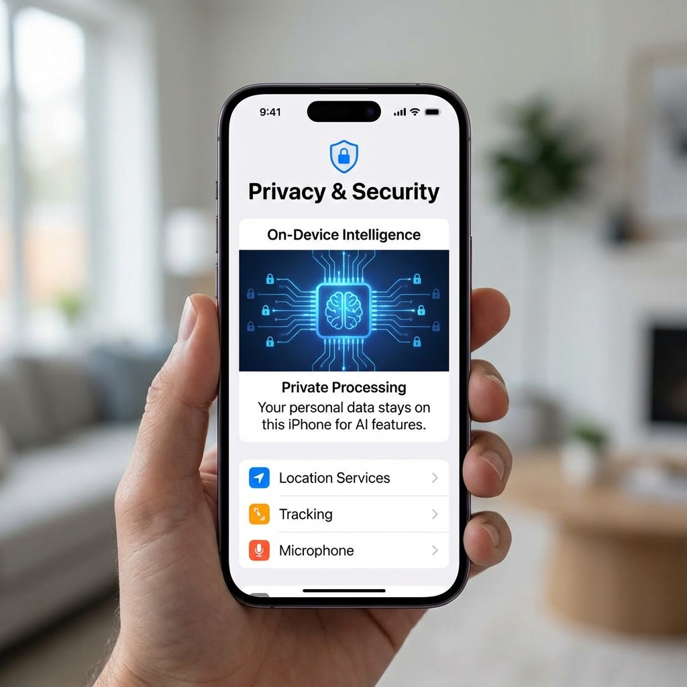

In a move that would have seemed impossible a decade ago, Apple and Google announced a partnership this week to integrate Google's Gemini AI directly into Siri. The iPhone's digital assistant—long the punchline of AI incompetence—is getting a brain transplant from its arch-rival.
The partnership signals something profound: even Apple, with its legendary insistence on controlling every layer of its technology stack, recognizes that building competitive AI from scratch is harder than partnering with those who already have. Siri has lagged behind Alexa and Google Assistant for years; Gemini integration is Apple's admission that the gap had become embarrassing.
What Gemini Brings to Siri
Current Siri can set timers, send texts, and answer basic questions—usually on the third attempt. Gemini-powered Siri promises something genuinely different: contextual understanding that persists across conversations, complex multi-step task execution, and integration with Google's vast knowledge graph.
The demo scenarios Apple highlighted are telling: "Find that email from Sarah about the budget, draft a response agreeing to the changes, and add a calendar reminder for the follow-up meeting next Tuesday." Current Siri can't chain three commands together. Gemini-powered Siri can.
The Privacy Promise

Apple being Apple, the announcement emphasized privacy. Gemini integration will use on-device processing where possible, Apple's Private Cloud Compute for sensitive operations, and only fall back to Google's servers for queries that require broader knowledge access. Apple insists that Google won't retain Siri query data or use it to train models.
The technical implementation is complex: hybrid processing that routes queries to the right infrastructure based on sensitivity and capability requirements. Apple users get Gemini's intelligence; Google gets... actually, that's the interesting question. What does Google get out of this?
Why Google Said Yes
The partnership gives Google something it has struggled to achieve: meaningful presence on iPhones. Google's apps are available on iOS, but Apple's ecosystem has always been a walled garden that limited Google's data collection and user engagement. Gemini integration changes that equation.
Every Siri query processed through Gemini gives Google insights into how iPhone users think, what they want, and how they phrase requests. Even with Apple's privacy safeguards, aggregate patterns emerge. Google gets to train its models on the behavior of the world's most valuable consumer demographic—Apple users.
There's also the strategic dimension. By powering Siri, Google denies that position to OpenAI or Microsoft. If iPhone users get their AI through Gemini, they're less likely to switch to ChatGPT or Copilot. The partnership locks in Google's position as the AI provider of choice for Apple's ecosystem.
The Microsoft Problem
Microsoft has invested billions in OpenAI and integrated GPT models across its products. The Apple-Google partnership puts Microsoft in an awkward position: its AI advantage was supposed to be enterprise integration, but now consumers are getting world-class AI through their iPhones—powered by Google's models, not Microsoft's.
The competitive implications extend to the Copilot ecosystem. If Siri with Gemini can handle complex tasks across iPhone apps, where does that leave Microsoft's mobile AI strategy? Windows and Office integration is valuable, but mobile is where most computing happens now.
When It Arrives
Apple announced that Gemini-powered Siri will roll out with iOS 19.4 later this year. The integration starts with basic queries and expands to more complex capabilities over time. Apple is characteristically cautious: better to under-promise and over-deliver than risk another Siri embarrassment.
Early beta testers report genuinely impressive improvements. Siri finally understands context, remembers previous interactions, and can execute multi-step workflows without losing track. It's the Siri Apple should have built years ago—powered by the AI lab that, until this week, was its fiercest competitor.
The AI landscape is full of unexpected alliances. But Apple and Google partnering to make Siri not terrible? That might be the most surprising development of all.